Other
Works
Three smaller projects, each made around a material or a medium: a chair cut from cardboard, a fountain for a cat, a darkroom for words.
Interlock Chair
A rounded chair built from interlocking sheets of corrugated cardboard. The first object I designed and built.
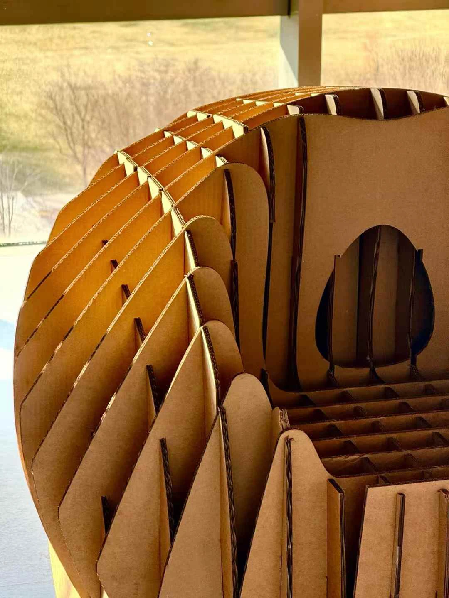
Seat and side ribsEach slotted rib fits over the ribs running across it. The same grid shapes the seat, the sides and the back.
From shell to ribs
I opened up a radial shell to make room for a recessed seat, then developed an intersecting rib grid that carries the curve through the arms and back.
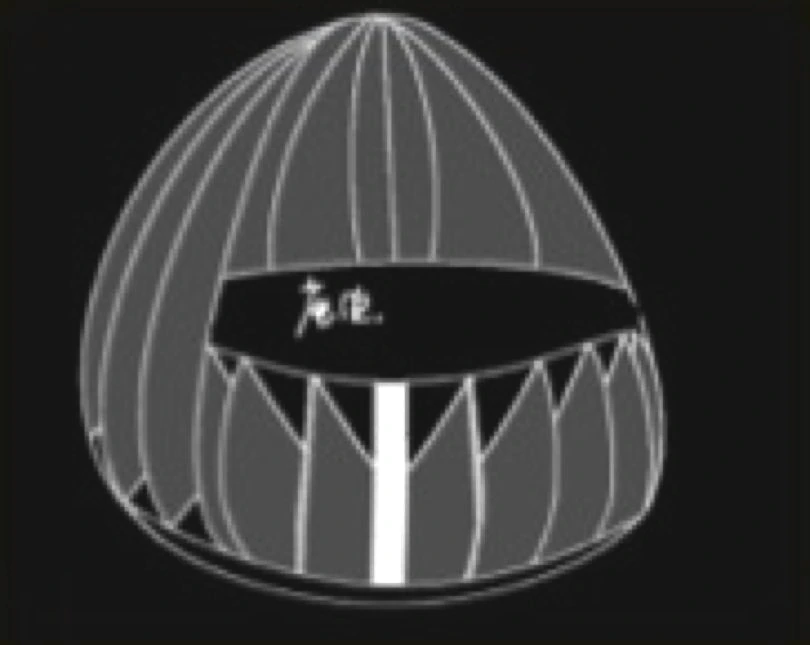
01 / Radial shell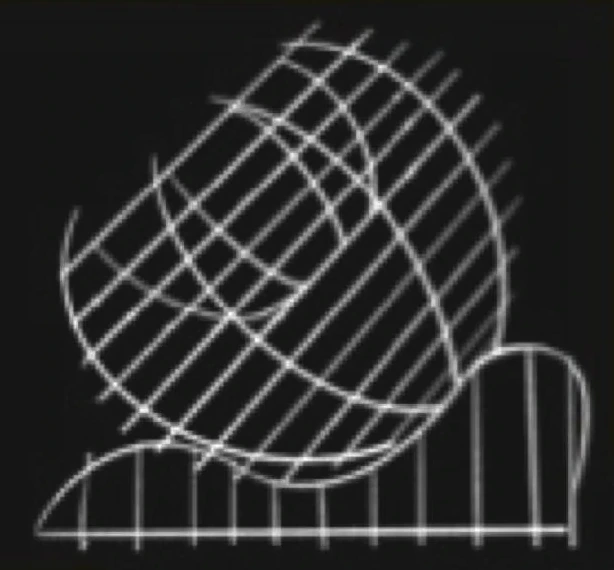
02 / Crossing ribs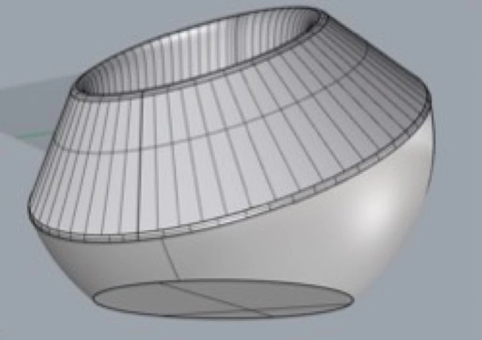
03 / Revised profile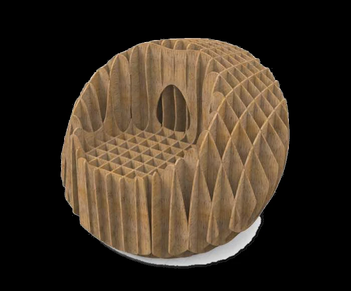
04 / Final CAD formSilverfish
A cat fountain for small homes, designed around visible water and easier cleaning.
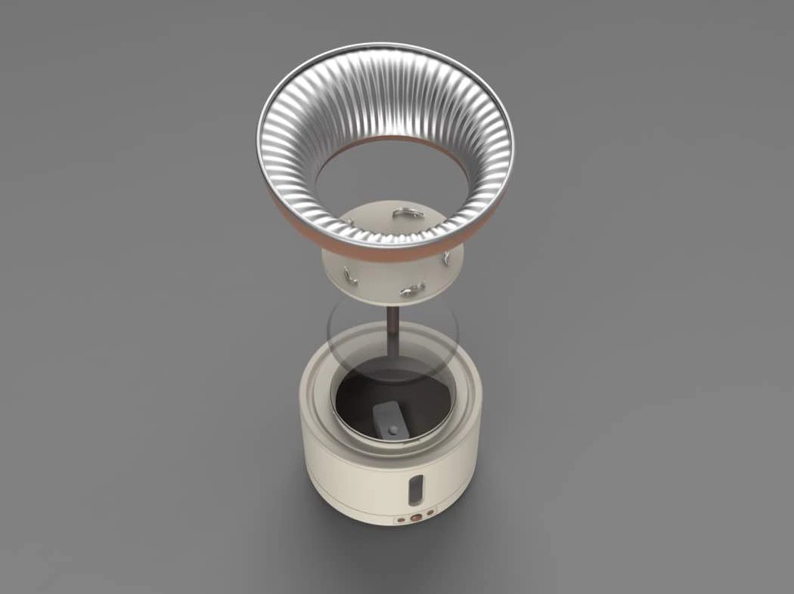
Bowl / reservoir / baseThe removable bowl and reservoir separate from the weighted base for cleaning.
The concept also proposes sensor-triggered flow, filtration and UV treatment.
Draw the cat towards the water and simplify routine cleaning for people living in compact homes.
Making water visibleTwo outlets create a moving sheet of water. A rippled bowl inspired by spiral shells and small fish-shaped elements make that movement visible.
The studies moved from a broad bowl on a low base to a deeper, rippled bowl on a compact upright reservoir.
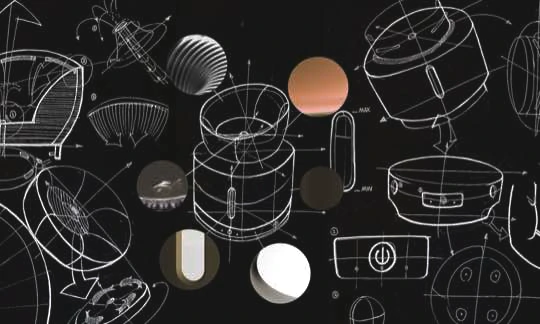
Form and flow sketches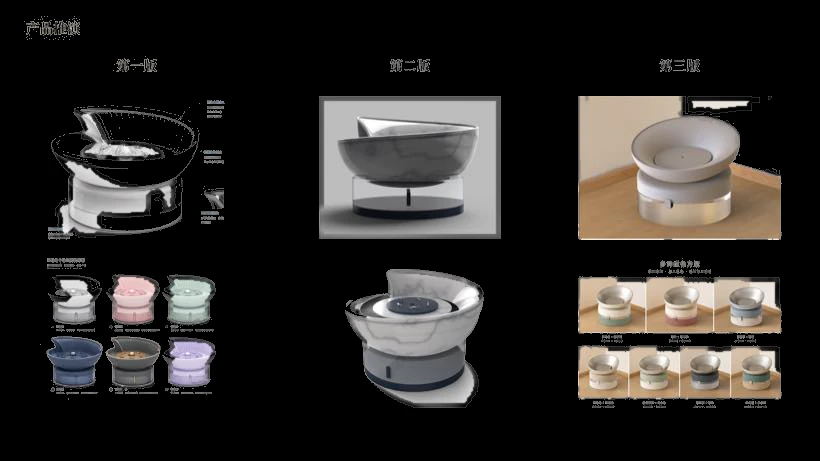
Three form iterationsLatent Poem
A digital darkroom that turns shared photographs and words into film poems.
Three steps in the digital darkroom
01 / Expose
Contribute one photograph and one word. Use blur, grain or displacement to change the exposure.
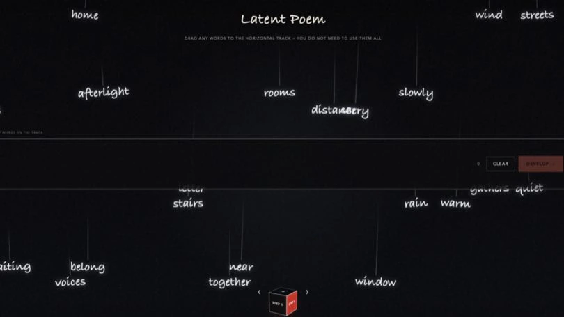
02 / Develop
Drag words onto the track to build a line. The images follow the new word order.
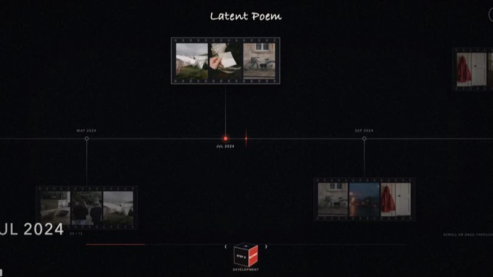
03 / Record
Save the finished poem and image sequence. The Records view lets you revisit both in the browser.
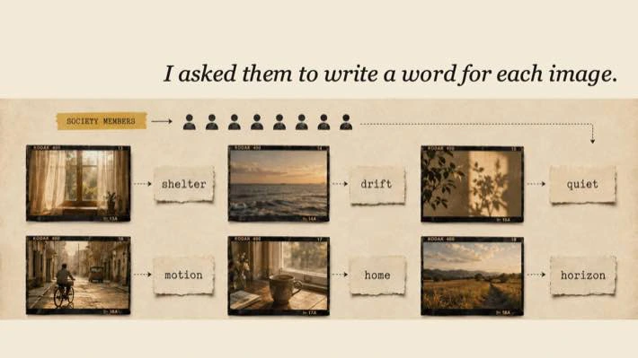
Society members supplied one word per image. An early prototype let visitors browse the archive. In Latent Poem, those same pairs became the material visitors could rearrange into their own poems.
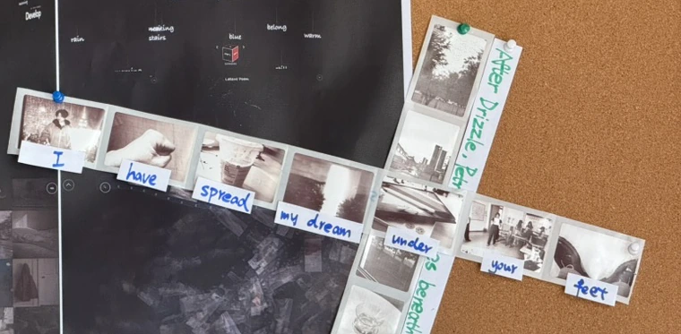
I have spread
my dream
under your feet
Each poem was printed with my film camera printer as a strip of photographs, labelled word by word, and pinned over the prototype screens.